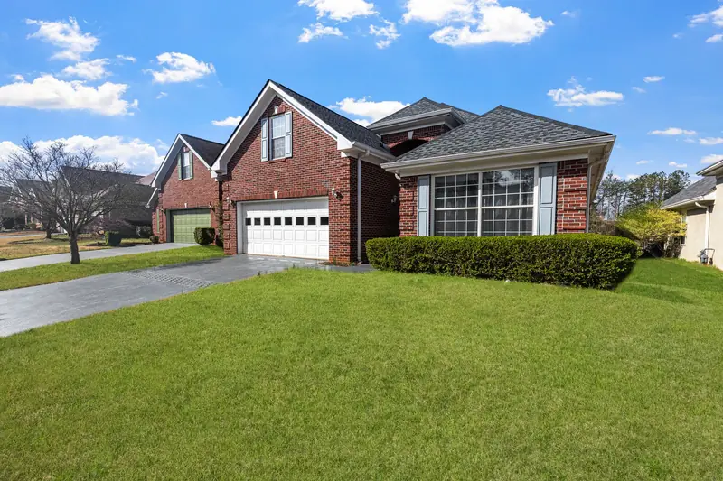

Farragut
West Knox County suburbs with big attics and long duct runs.
Learn more
West Knoxville
Cedar Bluff to Northshore, from 1970s splits to 2000s builds.
Learn more
Bearden
Older homes along Kingston Pike with crawl spaces and plaster walls.
Learn more
Karns
A valley community with 1960s ranches and new subdivisions.
Learn more
Powell
North Knox County homes, manufactured homes and shops.
Learn more
Oak Ridge
Manhattan Project era houses and mid-century ranches.
Learn more
Maryville
Blount County seat, now on the 2024 energy code.
Learn more
Alcoa
A former company town with older homes and new growth.
Learn more
Lenoir City
Lake and river homes below Fort Loudoun Dam.
Learn moreSevierville
Cabins, rentals and homes in the Smoky Mountain foothills.
Learn more
Gatlinburg
Mountain cabins and rebuilds in a wet, high-elevation town.
Learn more
Morristown
Hamblen County homes, many built before 1980.
Learn moreOther Towns We Cover
We also work in Halls, Fountain City, Seymour, Pigeon Forge, Clinton, Norris, Loudon, Tellico Village, Louisville, Concord, Solway, Claxton, Jefferson City, Dandridge, Athens, Sweetwater and Madisonville. If your address is in one of the nine counties above, call (865) 564-7823 for a free estimate.
Wherever you are, the work is the same: every insulation service we offer is available across the whole area, from injection foam for existing walls to crawl space vapor barriers and metal building insulation.